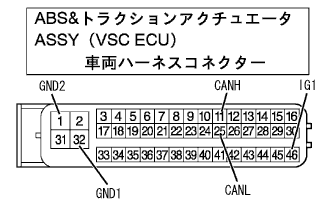

CAN通信システム（ＶＳＣあり） VSC ECU通信途絶モード |
| 診断項目 | 症状 | 疑わしい箇所 |
|---|---|---|
| VSC ECU通信途絶モード | TaSCANの‘CANバス接続ECU確認’画面に‘ABS·VSC’が表示されない | ABS&トラクションアクチュエータASSY(VSC ECU)電源/内部異常 |
| 手順1 | ワイヤハーネス点検（IG1, GND1,GND2） |
|  |
SST(トヨタエレクトリカルテスター)を使用して、ABS&トラクションアクチュエータASSY(VSC ECU)車両ハーネスコネクターの各端子←→ボデーアース間を点検する。
| 点検端子 | 測定条件 | 基準 |
|---|---|---|
| 46(IG1)←→ボデーアース | IG ON | 10-14V |
| 32(GND1)←→ボデーアース | 常時 | 1Ω未満 |
| 1(GND2)←→ボデーアース | 常時 | 1Ω未満 |
|
| ||||
| OK | ||
| ||